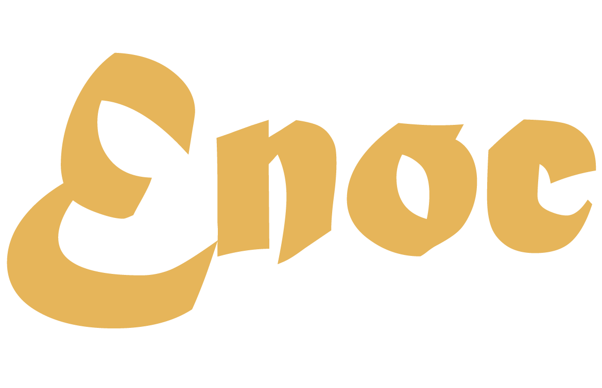

Un viaje a través del tiempo y del alma humana: cada puerta es una lección, cada misión una prueba y cada fragmento una esperanza.
Aventura · Puzzles del tiempo · 2D
Sinopsis
Escrito por Carlos Correa y Ángel Emanuel Medina · ULP San Luis
En un mundo al borde del colapso, donde la humanidad ha comenzado a perder aquello que la definía, como la compasión, la memoria y el sentido de propósito, la destrucción y el exterminio se extienden como una sombra inevitable sobre el tiempo mismo.
A las afueras de una ciudad legendaria, Enoc, un joven apasionado por la historia y los misterios del pasado, se adentra en un antiguo laberinto olvidado por generaciones. Allí descubre un viejo manuscrito, un rollo que habla del destino humano, y una llave ancestral capaz de abrir portales sellados por el tiempo. Descubre que el texto le revela que la caída de la humanidad no es un evento aislado, sino una consecuencia de fragmentos de sabiduría perdidos a lo largo de distintas eras. Solo quien logre reunirlos podrá recomponer la Roca de la Sabiduría y restaurar el equilibrio del mundo.
Al cruzar las puertas del laberinto, el personaje es envuelto por una luz que lo transporta a una dimensión desconocida, donde se le manifiesta el Guardián del Tiempo. Esta enigmática entidad le encomienda una misión crucial: viajar a través de distintas épocas históricas y dimensiones alternativas, encarnando a héroes legendarios, para recuperar las piezas perdidas de la Roca. Cada puerta abierta con la llave lo conduce a una era diferente, donde deberá superar desafíos que reflejan tanto la grandeza como las fallas de la humanidad:
- combates aéreos en la Segunda Guerra Mundial,
- conquistas vikingas marcadas por la ambición y la supervivencia,
- pruebas olímpicas en la antigua Grecia donde los dioses observan en silencio,
- viajes espaciales entre mundos desconocidos,
- carreras extremas donde la vida pende de la velocidad,
- combates en el ring que ponen a prueba la voluntad,
- misiones militares en desiertos desolados procurando la paz con la guerra.
Cada victoria le otorga a Enoc un fragmento de la Roca de la Sabiduría, piezas de un gran rompecabezas que representan valores olvidados: valentía, honor, sacrificio, memoria, amor, compasión y amistad.
A medida que la roca se reconstruye, Enoc no solo se acerca a su libertad, sino también a la posibilidad de revertir el destino apocalíptico que amenaza con borrar a la humanidad por completo.
Enoc: En el Laberinto del Tiempo es un viaje a través del tiempo y del alma humana, donde cada puerta es una lección, cada misión una prueba, y cada fragmento recuperado una esperanza para salvar aquello que aún puede ser salvado.
Eras y misiones
Aviación
Combates aéreos en la Segunda Guerra Mundial.
Vikingos
Conquistas marcadas por la ambición y la supervivencia.
Grecia
Pruebas olímpicas donde los dioses observan en silencio.
Espacio
Viajes espaciales entre mundos desconocidos.
Carreras
Carreras extremas donde la vida pende de la velocidad.
El ring
Combates en el ring que ponen a prueba la voluntad.
El desierto
Misiones militares procurando la paz con la guerra.
...y más puertas
Nuevas eras y dimensiones esperan ser abiertas.
Los 7 valores de la Roca
Valentía
Honor
Sacrificio
Memoria
Amor
Compasión
Amistad
Características principales
La llave ancestral
Abre los portales sellados por el tiempo que conducen a cada era.
Enigmas y acertijos
Desafíos con la lógica de cada época: relojes, runas y constelaciones.
Héroes legendarios
Encarna al Aviador, el Griego, el Vikingo y otros héroes de la historia.
Arte hecho a mano
Ilustración y animación 2D propias, con una identidad visual por cada época.
Mecánicas de juego
01 Cruza las puertas: cada puerta abierta con la llave ancestral te lleva a una era distinta del laberinto.
02 Supera los desafíos: cada victoria te otorga un fragmento de la Roca de la Sabiduría.
03 Encarna a héroes: viaja a cada era tomando el rol de héroes legendarios de la historia.
04 Recompón la Roca: reúne los 7 valores olvidados para restaurar el equilibrio del mundo.
Requisitos del sistema
Requisitos mínimos
- Windows 7 / 10 (64 bits)
- Procesador dual-core a 2.0 GHz
- 4 GB de RAM
- Tarjeta gráfica con soporte DirectX 10
- 2 GB de espacio libre
Requisitos recomendados
- Windows 10 / 11 (64 bits)
- Procesador quad-core a 2.8 GHz
- 8 GB de RAM
- Tarjeta gráfica dedicada de 2 GB
- 2 GB de espacio libre (SSD)
El juego está en desarrollo: los requisitos son provisionales y pueden cambiar.